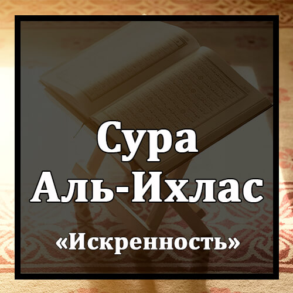

Бисмилляхир-Рахманир-Рахиим
Во имя Аллаха Милостивого и Милосердного!
Куль хуАллааху Ахад
Скажи : «Он-Аллах-един;
Аллаахус-Самад
Извечен Аллах один;
Лям ялид уа лям юляд
Не рождал Он, и не был рожден,
Уа лям якулляху куфууан Ахад
И с Ним никто не сравним».